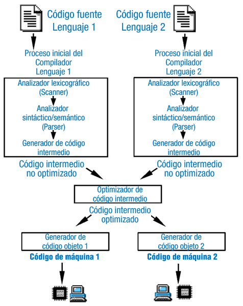

Una de las diferencias más notables entre un lenguaje de programación web y otro es la manera en que se ejecutan en el servidor web. Debes distinguir tres grandes grupos:
- Lenguajes de guiones (scripting). Son aquellos en los que los programas se ejecutan directamente a partir de su código fuente original. Se almacenan normalmente en un fichero de texto plano. Cuando el servidor web necesita ejecutar código programado en un lenguaje de guiones, le pasa la petición a un intérprete, que procesa las líneas del programa y genera como resultado una página web. De los lenguajes que estudiaste anteriormente, pertenecen a este grupo Perl, Python, PHP y ASP (el precursor de ASP.Net).
- Lenguajes compilados a código nativo. Son aquellos en los que el código fuente se traduce a código binario, dependiente del procesador, antes de ser ejecutado. El servidor web almacena los programas en su modo binario, que ejecuta directamente cuando se les invoca. El método principal para ejecutar programas binarios desde un servidor web es CGI. Utilizando CGI podemos hacer que el servidor web ejecute código programado en cualquier lenguaje de propósito general como puede ser C.

- Lenguajes compilados a código intermedio. Son lenguajes en los que el código fuente original se traduce a un código intermedio, independiente del procesador, antes de ser ejecutado. Es la forma en la que se ejecutan por ejemplo las aplicaciones programadas en Java, y lo que hace que puedan ejecutarse en varias plataformas distintas. En la programación web, operan de esta forma los lenguajes de las arquitecturas Java EE (servlets y páginas JSP) y ASP.Net. En la plataforma ASP.Net y en muchas implementaciones de Java EE, se utiliza un procedimiento de compilación JIT. Este término hace referencia a la forma en que se convierte el código intermedio a código binario para ser ejecutado por el procesador. Para acelerar la ejecución, el compilador puede traducir todo o parte del código intermedio a código nativo cuando se invoca a un programa. El código nativo obtenido suele almacenarse para ser utilizado de nuevo cuando sea necesario.
Cada una de estas formas de ejecución del código por el servidor web tiene sus ventajas e inconvenientes.
- Los lenguajes de guiones tienen la ventaja de que no es necesario traducir el código fuente original para ser ejecutados, lo que aumenta su portabilidad. Si se necesita realizar alguna modificación a un programa, se puede hacer en el momento. Por el contrario el proceso de interpretación ofrece un peor rendimiento que las otras alternativas.
- Los lenguajes compilados a código nativo son los de mayor velocidad de ejecución, pero tienen problemas en lo relativo a su integración con el servidor web. Son programas de propósito general que no están pensados para ejecutarse en el entorno de un servidor web. Por ejemplo, no se reutilizan los procesos para atender a varias peticiones: por cada petición que se haga al servidor web, se debe ejecutar un nuevo proceso. Además los programas no son portables entre distintas plataformas.
- Los lenguajes compilados a código intermedio ofrecen un equilibrio entre las dos opciones anteriores. Su rendimiento es muy bueno y pueden portarse entre distintas plataformas en las que exista una implementación de la arquitectura (como un contenedor de servlets o un servidor de aplicaciones Java EE).